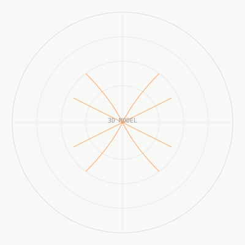

Полная длина канала
Основные лопатки формируют направление потока от входной области к наружному диаметру.
Две геометрии одного диаметра, рассчитанные по разным критериям: максимальный расчётный КПД и максимальный расчётный прирост полного давления.

Обе версии имеют одинаковый наружный диаметр и принцип построения, но различаются числом лопаточных каналов и расчётным приоритетом.
Основные лопатки формируют направление потока от входной области к наружному диаметру.
Укороченные лопатки увеличивают число каналов в выходной части без полного загромождения входа.
Лопатки объединены со ступицей в твёрдое тело; переходы у корня учитываются при подготовке производства и FEA.
РК‑200‑Э, РК‑200‑Д сравниваются в единой постановке. Один вариант ориентирован на расчётный КПД, второй — на прирост полного давления.
Более высокое расчётное давление РК‑200‑Д сопровождается меньшим расчётным КПД и большим числом лопаток.